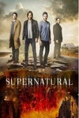
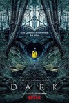

Когда-то ангел Люцифер был изгнан из рая и приговорен вечно править адом. Но со временем Люциферу надоело однообразие преисподней, поэтому он решил взять отпуск и отправиться в мир людей, поселившись в «Городе ангелов». В Лос-Анджелесе Люцифер открыл свой ночной клуб «Lux» и наслаждается разгульной жизнью, в которой есть все необходимое. Обаятельный подлец не просто читает мысли людей: он видит их насквозь и знает все самые тайные желания.
Рик Грайм служил в местной полиции, когда получил тяжелое ранение и попал в больницу в бессознательном состоянии. Главный герой приходит в себя после нескольких дней отключки. Вокруг никого. Он один в тихой палате. Приходится освободиться от оков капельниц и других поддерживающих жизнь аппаратов. Ранение все еще дает о себе знать, но главный герой делает первые шаги после пробуждения. Рик начинает свой путь по миру, который принадлежит теперь не людям, а ходячим мертвецам.

Увлекательный детективный сериал с элементами ужасов «Сверхъестественное» о двух братьях, которые волей судьбы стали на тропу войны против всякой нечести из потустороннего мира, который начал просачиваться на мирную землю.
Семья винчестеров была не совсем обычной. Из поколения в поколение она вела войну против сил тьмы. Демон забрал мать Дина и его младшего брата Сема, и теперь они вместе с отцом, который стал их учителем и наставником, колесят по всем штатам Америки в поисках этого демона, а заодно и истребляя прочую сверхъестественную нечесть.

Перед вами первый сезон проекта "Тьма", рассказывающий о событиях, связанных с одним небольшим поселением, где проживает четыре семьи. Немецкий городок выглядит весьма спокойным и довольно будничным. Люди здесь живут мирно и тихо. Семьи, являющиеся главными действующими лицами проекта, оказываются в эпицентре событий, которые навсегда меняют их жизнь. Простая и спокойная жизнь, которая похожа на идиллию, заканчивается. Два ребенка пропадают в неизвестном направлении. Представители каждой из семей склонны обвинять во всех бедах своих соседей. Начинается настоящая война между семьями. Конфликт разгорается нешуточный. Но что же на самом деле произошло? В ситуации, когда нужно найти ответы, начинаются раскрываться тайны прошлого главных героев, окутанные мраком и тьмой. Что же будет дальше?